Introduction to Data Visualization in R
Martin Schweinberger

Introduction

This tutorial introduces data visualization using R and shows how to
modify different types of visualizations in the ggplot
framework in R. This tutorial is aimed at beginners and intermediate
users of R with the aim of showcasing how to visualize data and how to
adapt, change, and modify visualizations using the ggplot
package in R. The aim is not to provide a fully-fledged guide but rather
to show and exemplify some common methods in data visualization such as
how to produce different types of visualizations, how to adapt the style
of visualizations, and how to modify the look and content of the
visualizations in R.
R offers a myriad of options and ways to visualize and summarize data which makes R an incredibly flexible tool. This introduction will focus on the three main frameworks for data visualization in R (base, lattice, and ggplot). It will show you how to modify your visualizations (e.g., changing axes and tick labels, change colors, and showing different plots in one window).
This introduction focuses on general questions and ideas behind data visualization, including problems you may encounter and practical exercises in setting up graphs. How to create different types of plots is shown in this tutorial.
This section highlights the different philosophies that underlie the different frameworks for data visualization in R. The major advantage of using R consists in the fact that the code can be stored, distributed, and run very easily. This means that R represents a flexible framework for creating graphs that enables sustainable, reproducible, and transparent procedures. There are of course, multitudes of ways to visualize data that will not be covered in this tutorial.
To be able to follow this tutorial, we suggest you check out and
familiarize yourself with the content of the following R
Basics tutorials:
- Getting started with R
- Loading, saving, and generating data in R
- String Processing in R
- Regular Expressions in R
- Handling tables in R
Click here1 to
download the entire R Notebook for this
tutorial.

Click
here
to open an interactive Jupyter notebook that allows you to execute,
change, and edit the code as well as to upload your own data.
Basics of data visualization
On a very general level, graphs should be used to inform the reader about properties and relationships between variables. This implies that…
graphs, including axes, must be labeled properly to allow the reader to understand the visualization with ease.
there should not be more dimensions in the visualization than there are in the data.
all elements within a graph should be unambiguous.
variable scales should be portrayed accurately (for instance, lines - which imply continuity - should not be used for categorically scaled variables).
graphs should be as intuitive as possible and should not mislead the reader.
Graphics philosophies
The three main frameworks in which to create graphics are basic framework, the lattice framework, and the ggplot or tidyverse framework. These frameworks reflect the changing nature of R as a programming language (or as a programming environment). The so-called base R consists of about 30 packages that are always loaded automatically when you open R - it is, so to say - the default version of using R when nothing else is loaded. The base R framework is the oldest way to generate visualizations in R that was used when other packages did not exists yet. However, base R can and is still used to create visualizations although most visualizations are now generated using the ggplot or tidyverse framework. The lattice framework followed the base R framework and offered some advantages such as handy ways to split up visualizations. However, lattice was replaced by the ggplot or tidyverse framework because the latter are much more flexible, offer full control, and follow an easy to understand syntax.
We will briefly elaborate on these three frameworks before moving on.
The base R framework
The base R framework is the oldest of the three and is
included in what is called the base R - a collection of
about 30 packages that are automatically activated/loaded when you start
R. The idea behind the “base” environment is that the
creation of graphics is seen in analogy to a painter who paints on an
empty canvass. Each line or element is added to the graph consecutively
which oftentimes leads to code that is very comprehensible but also very
long.
The lattice framework
The lattice environment was a follow-up to the base framework and it complements it insofar as it made it much easier to display various variables and variable levels simultaneously. The philosophy of the lattice-package is quite different from the philosophy of base: whereas everything had to be specified in base, the graphs created in the lattice environment require only very little code but are therefore very easily created when one is satisfied with the design but very labor intensive when it comes to customizing graphs. However, lattice is very handy when summarizing relationships between multiple variable and variable levels.
The ggplot framework
The ggplot environment was written by Hadley Wickham and it combines the positive aspects of both the base and the lattice package. It was first publicized in the gplot and ggplot1 packages but the latter was soon repackaged and improved in the now most widely used package for data visualization: the ggplot2 package. The ggplot environment implements a philosophy of graphic design described in builds on The Grammar of Graphics by Leland Wilkinson (Wilkinson 2012).
The philosophy of ggplot2 is to consider graphics as consisting out of basic elements (called aesthetics and they include, for instance, the data set to be plotted and the axes) and layers that overlaid onto the aesthetics. The idea of the ggplot2 package can be summarized as taking “care of many of the fiddly details that make plotting a hassle (like drawing legends) as well as providing a powerful model of graphics that makes it easy to produce complex multi-layered graphics.”
Thus, ggplots typically start with the function call
(ggplot) followed by the specification of the data, then
the aesthetics (aes), and then a specification of the type
of plot that is created (geom_line for line graphs,
geom_box for box plots, geom_bar for bar
graphs, geom_text for text, etc.). In addition, ggplot
allows to specify all elements that the graph consists of (e.g. the
theme and axes). The underlying principle is that a visualization is
build up by adding layers as shown below.
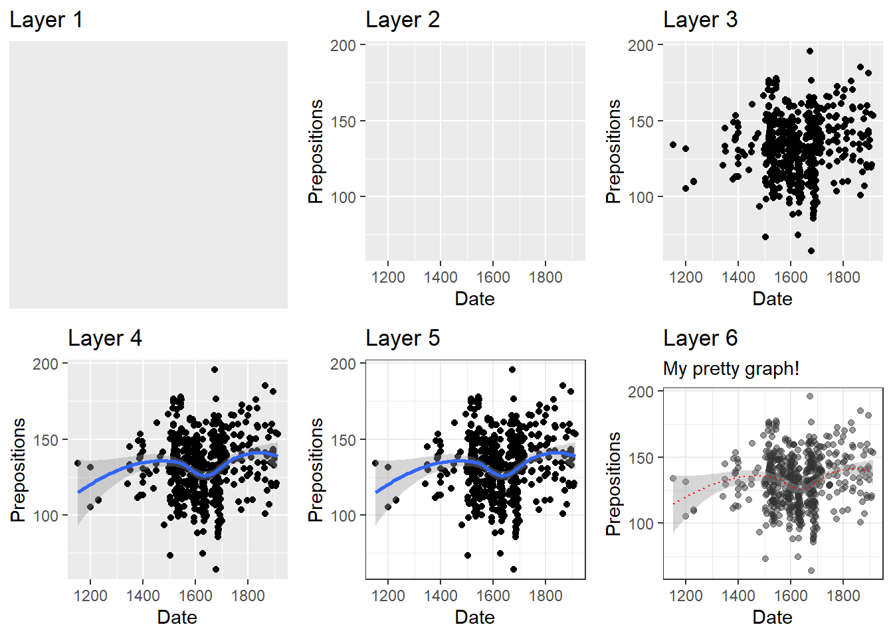
As the ggplot framework has become the dominant way to create visualizations in R, we will only focus on this framework in the following practical examples.
Preparation and session set up
This tutorial is based on R. If you have not installed R or are new to it, you will find an introduction to and more information how to use R here. For this tutorials, we need to install certain packages from an R library so that the scripts shown below are executed without errors. Before turning to the code below, please install the packages by running the code below this paragraph. If you have already installed the packages mentioned below, then you can skip ahead and ignore this section. To install the necessary packages, simply run the following code - it may take some time (between 1 and 5 minutes to install all of the libraries so you do not need to worry if it takes some time).
# install packages
install.packages("dplyr")
install.packages("stringr")
install.packages("ggplot2")
install.packages("vcd")
install.packages("SnowballC")
install.packages("tidyr")
install.packages("gridExtra")
install.packages("flextable")
install.packages("RColorBrewer")
# install klippy for copy-to-clipboard button in code chunks
install.packages("remotes")
remotes::install_github("rlesur/klippy")Now that we have installed the packages, we activate them as shown below.
# activate packages
library(dplyr)
library(stringr)
library(ggplot2)
library(tidyr)
library(gridExtra)
library(flextable)
library(RColorBrewer)
# activate klippy for copy-to-clipboard button
klippy::klippy()Once you have installed R and RStudio and initiated the session by executing the code shown above, you are good to go.
Getting started
Before turning to the graphs, we briefly inspect the data which is
called pdat and it is based on the Penn Parsed Corpora
of Historical English (PPC). The data contains the date when a
text was written (Date), the genre of the text
(Genre), the name of the text (Text), the
relative frequency of prepositions in the text
(Prepositions), and the region in which the text was
written (Region). Furthermore, GenreRedux
collapses the existing genres into five main categories
(Conversational, Religious, Legal,
Fiction, and NonFiction) while DateRedux
collapses the dates when the texts were composed into five main periods
(1150-1499, 1500-1599, 1600-1699, 1700-1799, and 1800-1913). We also
factorize non-numeric variables.
# load data
pdat <- base::readRDS(url("https://slcladal.github.io/data/pvd.rda", "rb"))Let’s briefly inspect the data.
Date | Genre | Text | Prepositions | Region | GenreRedux | DateRedux |
|---|---|---|---|---|---|---|
1,736 | Science | albin | 166.01 | North | NonFiction | 1700-1799 |
1,711 | Education | anon | 139.86 | North | NonFiction | 1700-1799 |
1,808 | PrivateLetter | austen | 130.78 | North | Conversational | 1800-1913 |
1,878 | Education | bain | 151.29 | North | NonFiction | 1800-1913 |
1,743 | Education | barclay | 145.72 | North | NonFiction | 1700-1799 |
1,908 | Education | benson | 120.77 | North | NonFiction | 1800-1913 |
1,906 | Diary | benson | 119.17 | North | Conversational | 1800-1913 |
1,897 | Philosophy | boethja | 132.96 | North | NonFiction | 1800-1913 |
1,785 | Philosophy | boethri | 130.49 | North | NonFiction | 1700-1799 |
1,776 | Diary | boswell | 135.94 | North | Conversational | 1700-1799 |
1,905 | Travel | bradley | 154.20 | North | NonFiction | 1800-1913 |
1,711 | Education | brightland | 149.14 | North | NonFiction | 1700-1799 |
1,762 | Sermon | burton | 159.71 | North | Religious | 1700-1799 |
1,726 | Sermon | butler | 157.49 | North | Religious | 1700-1799 |
1,835 | PrivateLetter | carlyle | 124.16 | North | Conversational | 1800-1913 |
We will now turn to creating the graphs.
Creating a simple graph
When creating a visualization with ggplot, we first use the function
ggplot and define the data that the visualization will use,
then, we define the aesthetics which define the layout, i.e. the x- and
y-axes.
ggplot(pdat, aes(x = Date, y = Prepositions))
In a next step, we add the geom-layer which defines the type of
visualization that we want to display. In this case, we use
geom_point as we want to show points that stand for the
frequencies of prepositions in each text. Note that we add the
geom-layer by adding a + at the end of the line!
ggplot(pdat, aes(x = Date, y = Prepositions)) +
geom_point()
We can also add another layer, e.g. a layer which shows a smoothed
loess line, and we can change the theme by specifying the theme we want
to use. Here, we will use theme_bw which stands for the
black-and-white theme (we will get into the different types of themes
later).
ggplot(pdat, aes(x = Date, y = Prepositions)) +
geom_point() +
geom_smooth(se = F) +
theme_bw()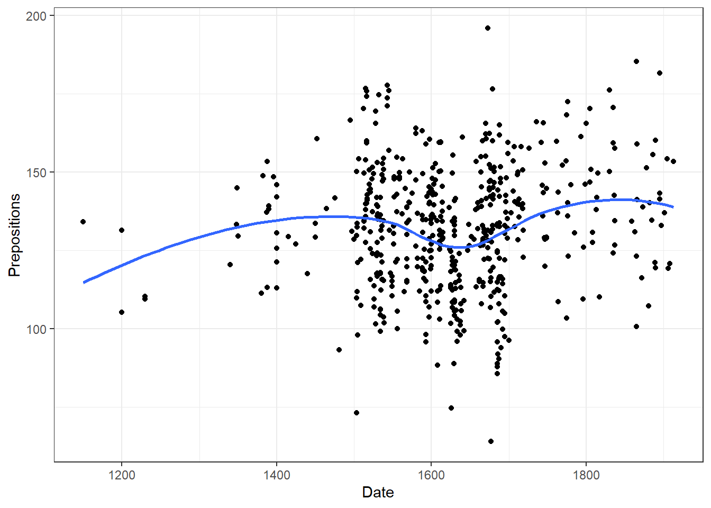
We can also store our plot in an object and then add different layers
to it or modify the plot. Here we store the basic graph in an object
that we call p and then change the axes names.
# store plot in object p
p <- ggplot(pdat, aes(x = Date, y = Prepositions)) +
geom_point() +
theme_bw()
# add layer with nicer axes titles to p
p + labs(x = "Year", y = "Frequency")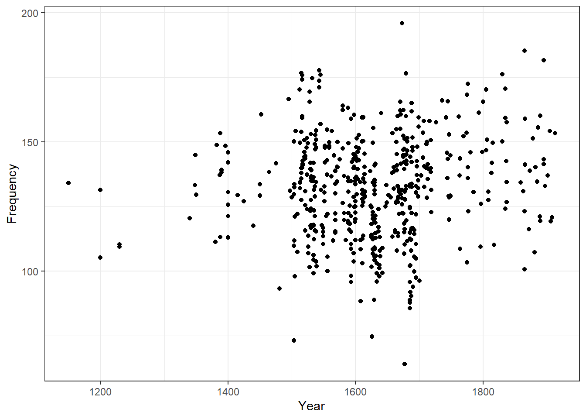
We can also integrate plots into data processing pipelines as shown below. When you integrate visualizations into pipelines, you should not specify the data as it is clear from the pipe which data the plot is using.
pdat %>%
dplyr::select(DateRedux, GenreRedux, Prepositions) %>%
dplyr::group_by(DateRedux, GenreRedux) %>%
dplyr::summarise(Frequency = mean(Prepositions)) %>%
ggplot(aes(x = DateRedux, y = Frequency, group = GenreRedux, color = GenreRedux)) +
geom_line()
Modifying axes and titles
There are different way to modify axes, the easiest way is to specify
the axes labels using labs (as already shown above). To add
a custom title, we can use ggtitle.
p + labs(x = "Year", y = "Frequency") +
ggtitle("Preposition use over time", subtitle="based on the PPC corpus")To change the range of the axes, we can specify their limits in the
coord_cartesian layer.
p + coord_cartesian(xlim = c(1000, 2000), ylim = c(-100, 300))p +
labs(x = "Year", y = "Frequency") +
theme(axis.text.x = element_text(face="italic", color="red", size=8, angle=45),
axis.text.y = element_text(face="bold", color="blue", size=15, angle=90))p + theme(
axis.text.x = element_blank(),
axis.text.y = element_blank(),
axis.ticks = element_blank())p + scale_x_discrete(name ="Year of composition", limits=seq(1150, 1900, 50)) +
scale_y_discrete(name ="Relative Frequency", limits=seq(70, 190, 20))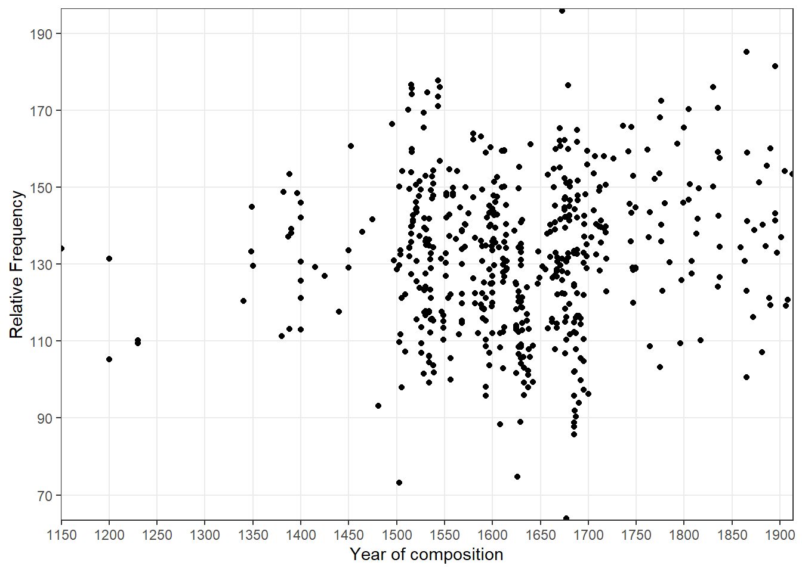
Modifying colors
To modify colors, you can include a color specification in the main aesthetics.
ggplot(pdat, aes(x = Date, y = Prepositions, color = GenreRedux)) +
geom_point() 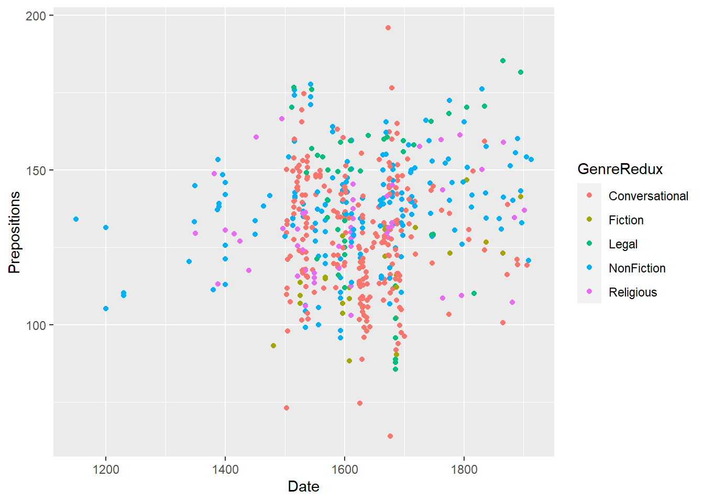
Or you can specify the color in the aesthetics of the geom-layer.
p + geom_point(aes(color = GenreRedux))
To change the default colors manually, you can use
scale_color_manual and define the colors you want to use in
the values argument and specify the variable levels that
want to distinguish by colors in the breaks argument. You
can find an overview of the colors that you can define in R here.
ggplot(pdat, aes(x = Date, y = Prepositions, color = GenreRedux)) +
geom_point() +
scale_color_manual(values = c("red", "gray30", "blue", "orange", "gray80"),
breaks = c("Conversational", "Fiction", "Legal", "NonFiction", "Religious"))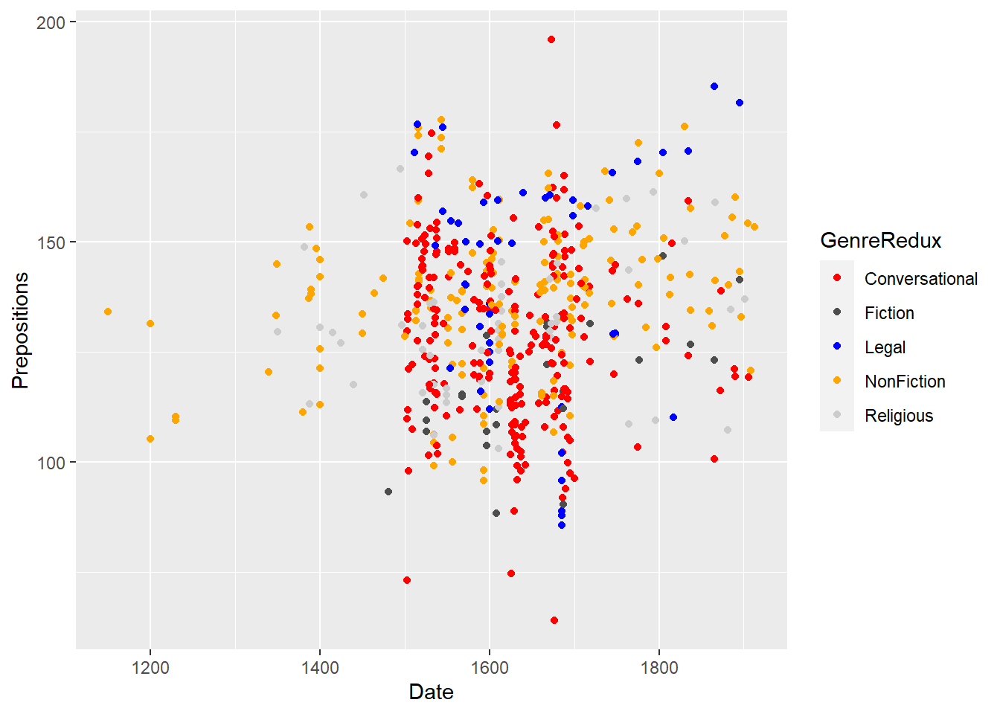
When the variable that you want to colorize does not have discrete
levels, you use scale_color_continuous instead of
scale_color_manual.
p + geom_point(aes(color = Prepositions)) +
scale_color_continuous()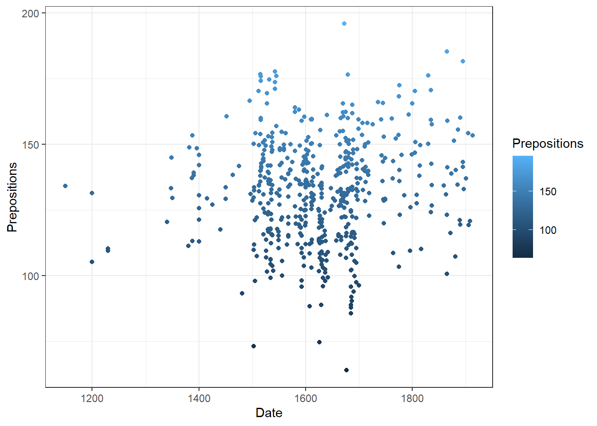
You can also change colors by specifying color palettes.
Color palettes are predefined vectors of colors and there
are many different color palettes available. Below are some
examples using the Brewer color palette.
p + geom_point(aes(color = GenreRedux)) +
scale_color_brewer()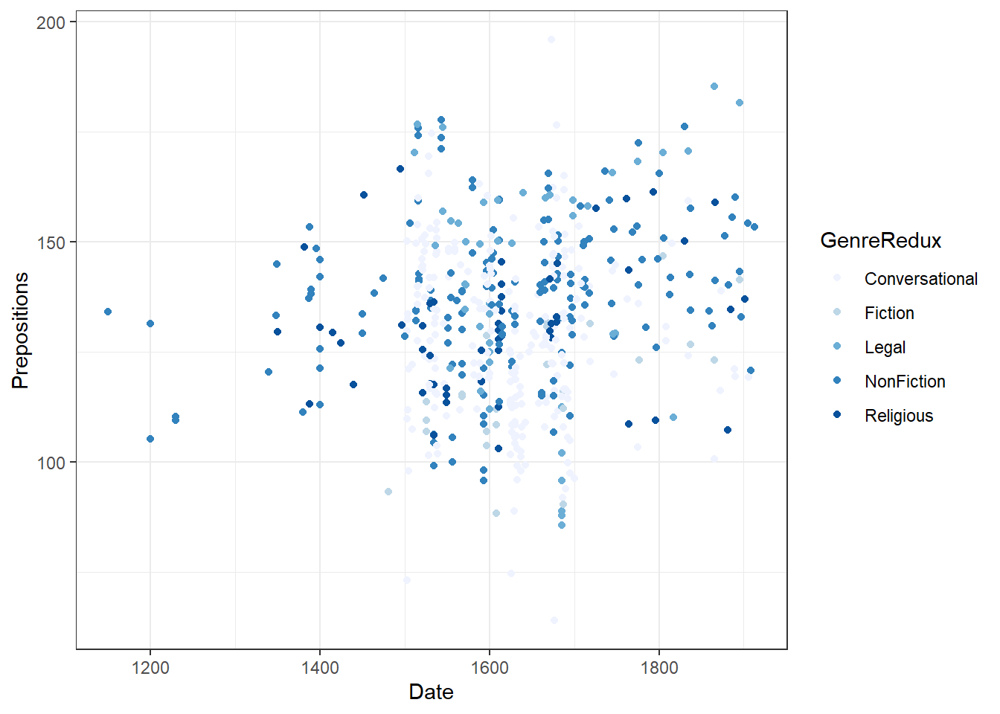
p + geom_point(aes(color = GenreRedux)) +
scale_color_brewer(palette = 2)p + geom_point(aes(color = GenreRedux)) +
scale_color_brewer(palette = 3)We now use the viridis color palette to show how you can
use another palette. The example below uses the viridis palette for a
discrete variable (GenreRedux).
p + geom_point(aes(color = GenreRedux)) +
scale_color_viridis_d()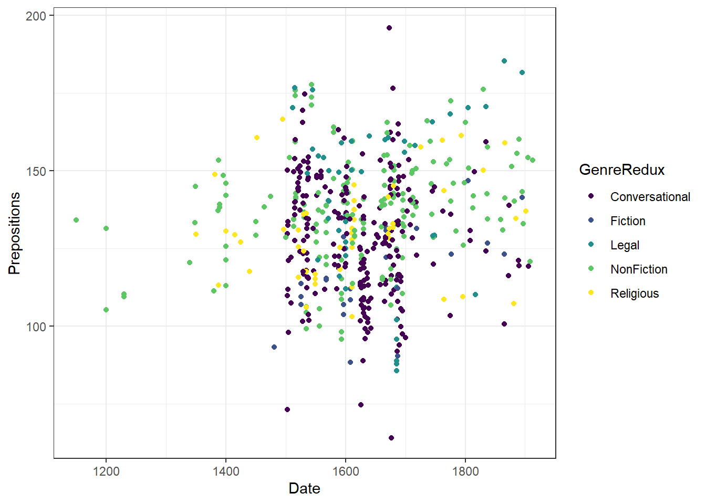
To use the viridis palette for continuous variables you need to use
scale_color_viridis_c instead of
scale_color_viridis_d.
p + geom_point(aes(color = Prepositions)) +
scale_color_viridis_c()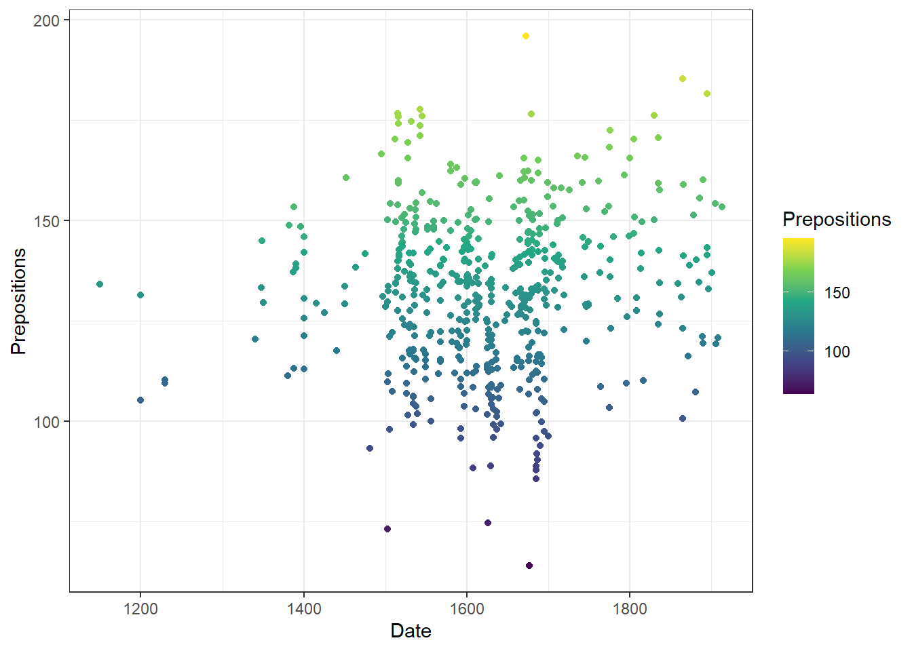
The Brewer color palette (see below) is the most
commonly used color palette but there are many more. You can find an
overview of the color palettes that are available here.
display.brewer.all()
Modifying lines & symbols
ggplot(pdat, aes(x = Date, y = Prepositions, shape = GenreRedux)) +
geom_point() ggplot(pdat, aes(x = Date, y = Prepositions)) +
geom_point(aes(shape = GenreRedux)) +
scale_shape_manual(values = 1:5)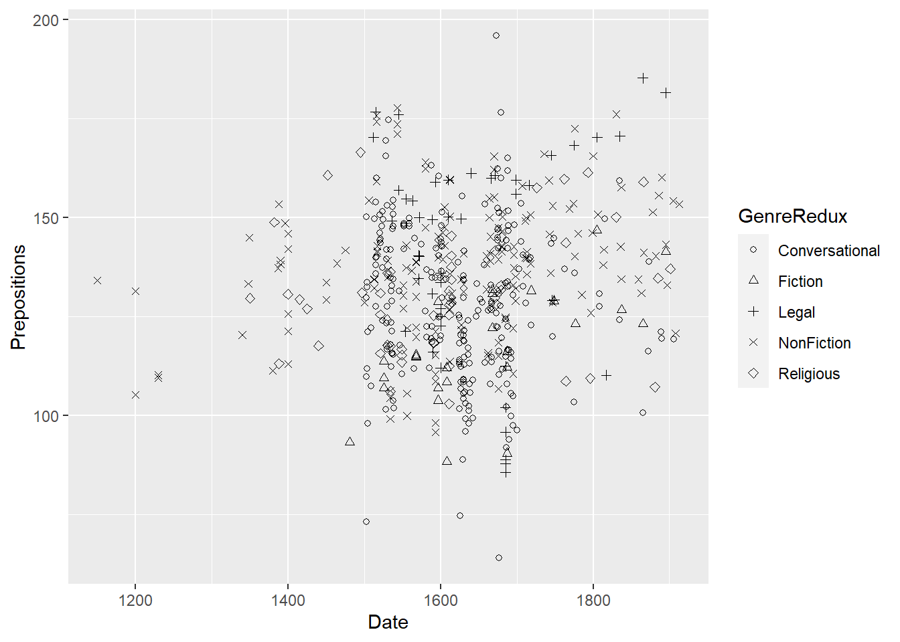
Similarly, if you want to change the lines in a line plot, you define
the linetype in the aesthetics.
pdat %>%
dplyr::select(GenreRedux, DateRedux, Prepositions) %>%
dplyr::group_by(GenreRedux, DateRedux) %>%
dplyr::summarize(Frequency = mean(Prepositions)) %>%
ggplot(aes(x = DateRedux, y = Frequency, group = GenreRedux, linetype = GenreRedux)) +
geom_line()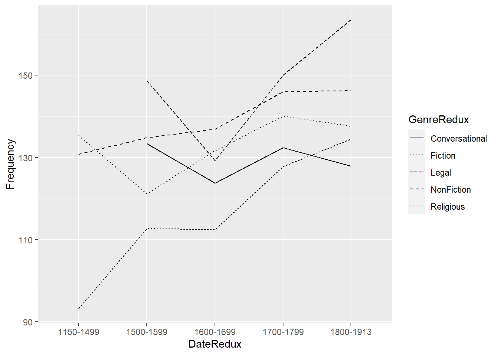
You can of course also manually specify the line types.
pdat %>%
dplyr::select(GenreRedux, DateRedux, Prepositions) %>%
dplyr::group_by(GenreRedux, DateRedux) %>%
dplyr::summarize(Frequency = mean(Prepositions)) %>%
ggplot(aes(x = DateRedux, y = Frequency, group = GenreRedux, linetype = GenreRedux)) +
geom_line() +
scale_linetype_manual(values = c("twodash", "longdash", "solid", "dotted", "dashed"))## `summarise()` has grouped output by 'GenreRedux'. You can override using the
## `.groups` argument.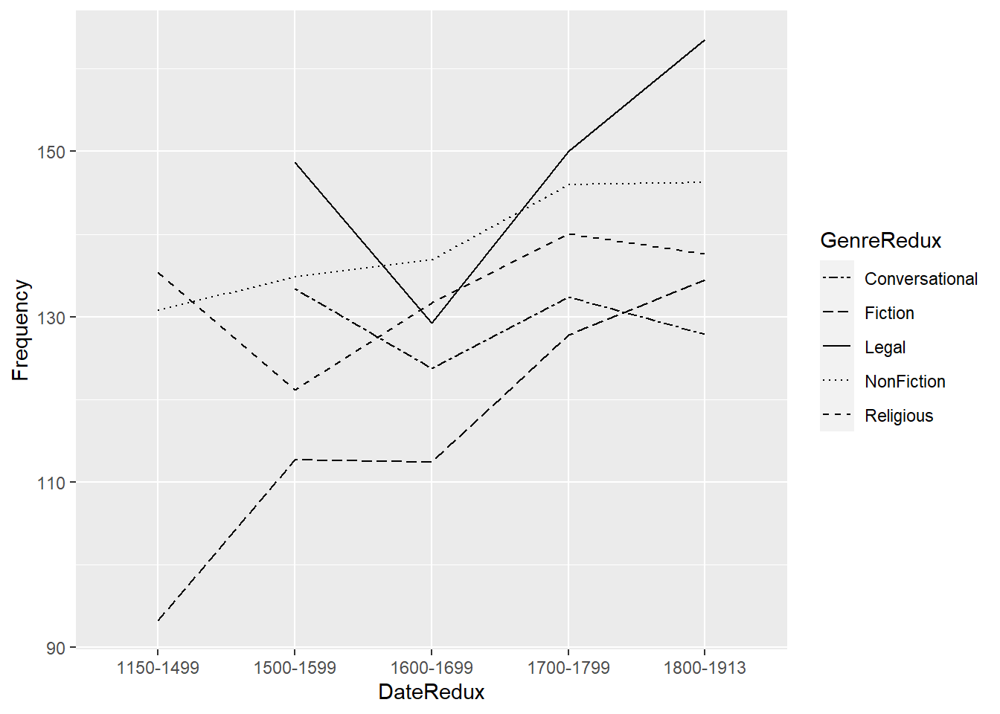
Here is an overview of the most commonly used linetypes in R.
d=data.frame(lt=c("blank", "solid", "dashed", "dotted", "dotdash", "longdash", "twodash", "1F", "F1", "4C88C488", "12345678"))
ggplot() +
scale_x_continuous(name="", limits=c(0,1)) +
scale_y_discrete(name="linetype") +
scale_linetype_identity() +
geom_segment(data=d, mapping=aes(x=0, xend=1, y=lt, yend=lt, linetype=lt))To make your layers transparent, you need to specify
alpha values.
ggplot(pdat, aes(x = Date, y = Prepositions)) +
geom_point(alpha = .2)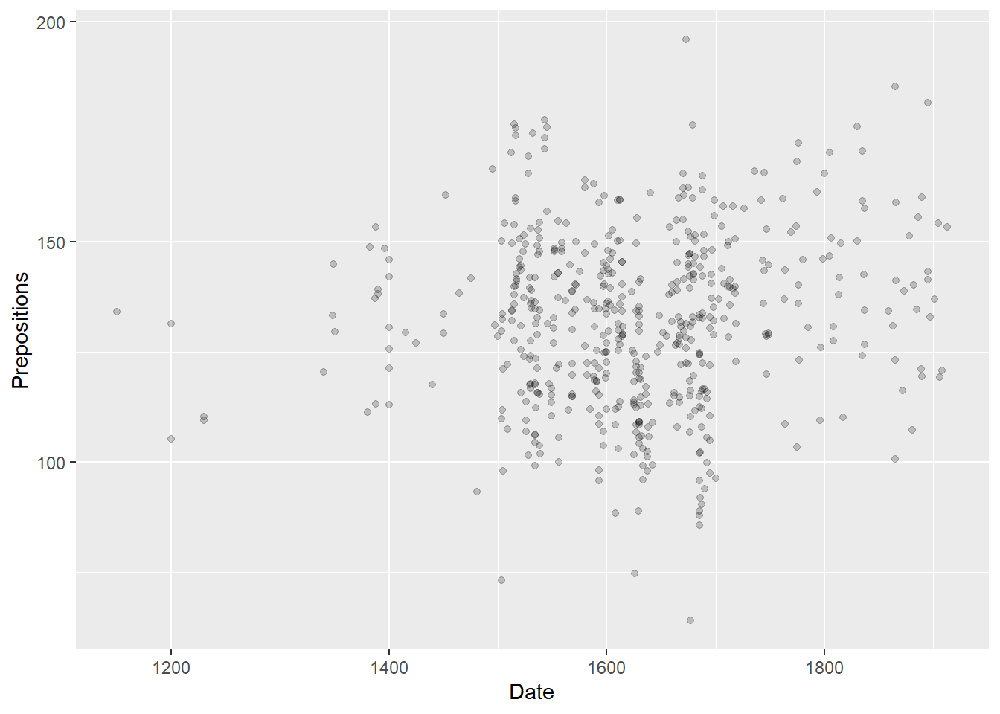
Transparency can be particularly useful when using different layers that add different types of visualizations.
ggplot(pdat, aes(x = Date, y = Prepositions)) +
geom_point(alpha = .1) +
geom_smooth(se = F)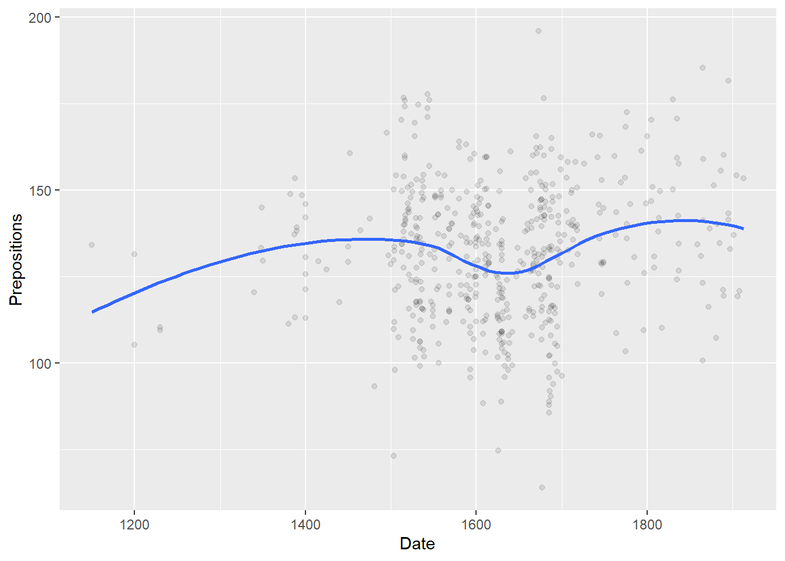
Transparency can also be linked to other variables.
ggplot(pdat, aes(x = Date, y = Prepositions, alpha = Region)) +
geom_point()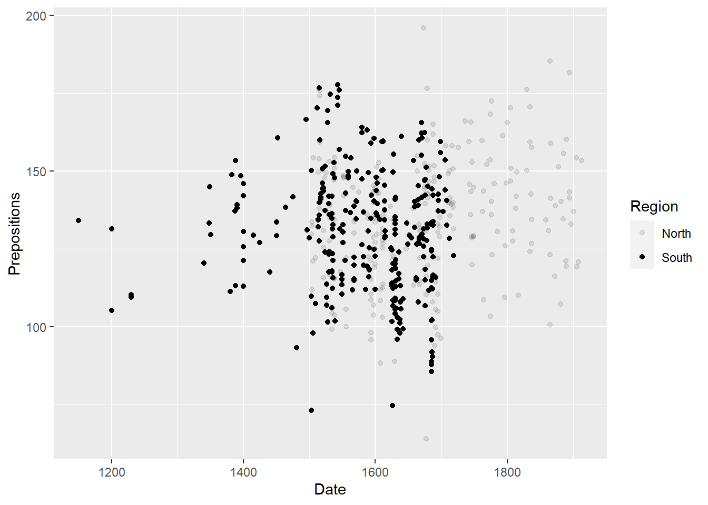
ggplot(pdat, aes(x = Date, y = Prepositions, alpha = Prepositions)) +
geom_point()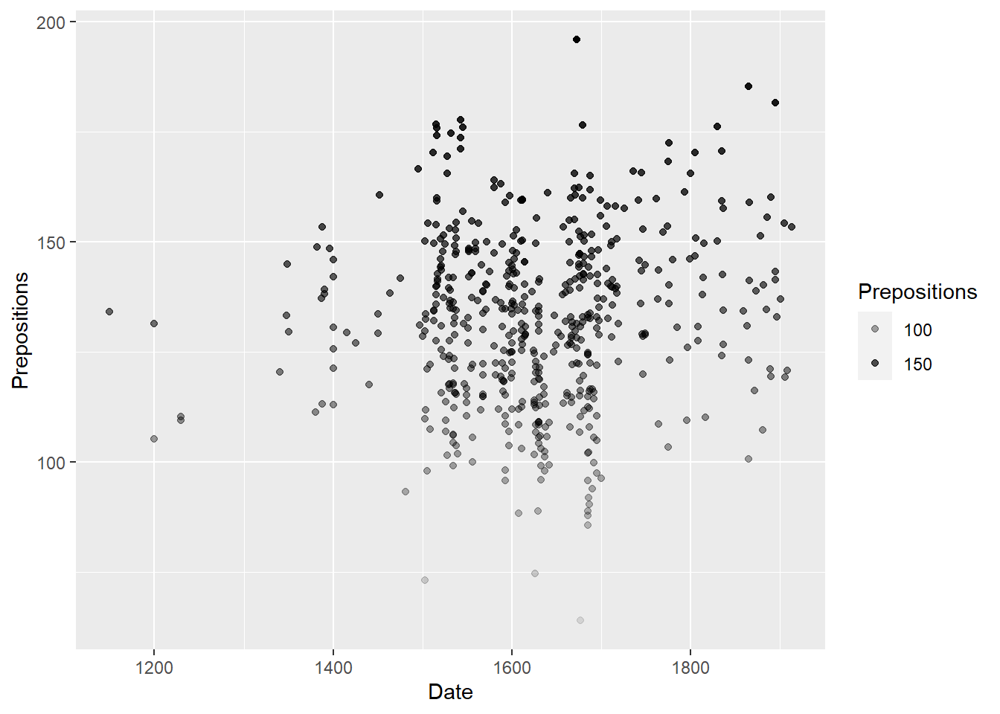
Adapting sizes
ggplot(pdat, aes(x = Date, y = Prepositions, size = Region, color = GenreRedux)) +
geom_point() 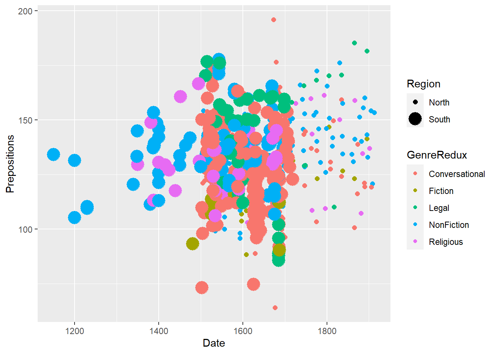
ggplot(pdat, aes(x = Date, y = Prepositions, color = GenreRedux, size = Prepositions)) +
geom_point() 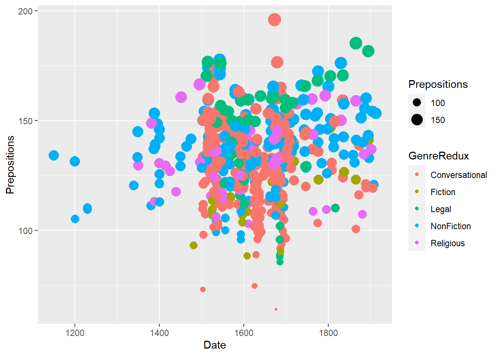
Adding text
pdat %>%
dplyr::filter(Genre == "Fiction") %>%
ggplot(aes(x = Date, y = Prepositions, label = Prepositions, color = Region)) +
geom_text(size = 3) +
theme_bw()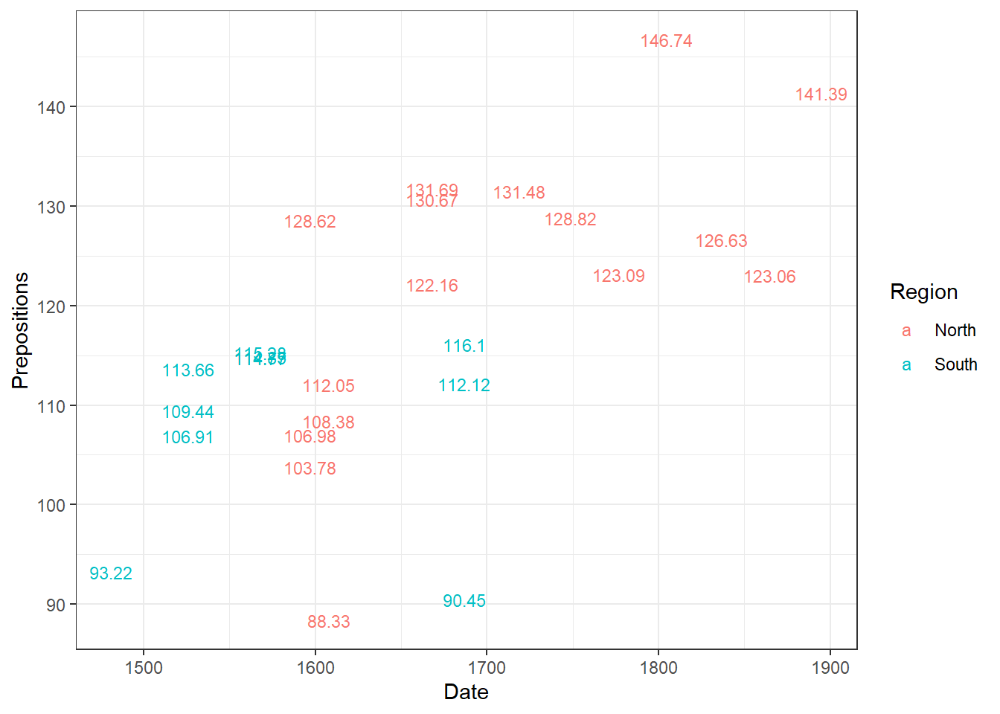
pdat %>%
dplyr::filter(Genre == "Fiction") %>%
ggplot(aes(x = Date, y = Prepositions, label = Prepositions)) +
geom_text(size = 3, hjust=1.2) +
geom_point() +
theme_bw()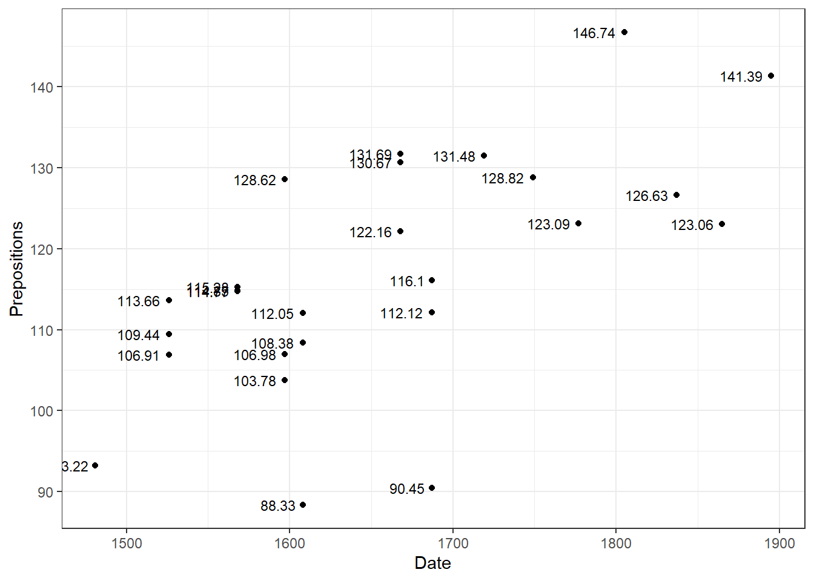
pdat %>%
dplyr::filter(Genre == "Fiction") %>%
ggplot(aes(x = Date, y = Prepositions, label = Prepositions)) +
geom_text(size = 3, nudge_x = -15, check_overlap = T) +
geom_point() +
theme_bw()
pdat %>%
dplyr::filter(Genre == "Fiction") %>%
ggplot(aes(x = Date, y = Prepositions, label = Prepositions)) +
geom_text(size = 3, nudge_x = -15, check_overlap = T) +
geom_point() +
theme_bw()ggplot(pdat, aes(x = Date, y = Prepositions)) +
geom_point() +
ggplot2::annotate(geom = "text", label = "Some text", x = 1200, y = 175, color = "orange") +
ggplot2::annotate(geom = "text", label = "More text", x = 1850, y = 75, color = "lightblue", size = 8) +
theme_bw()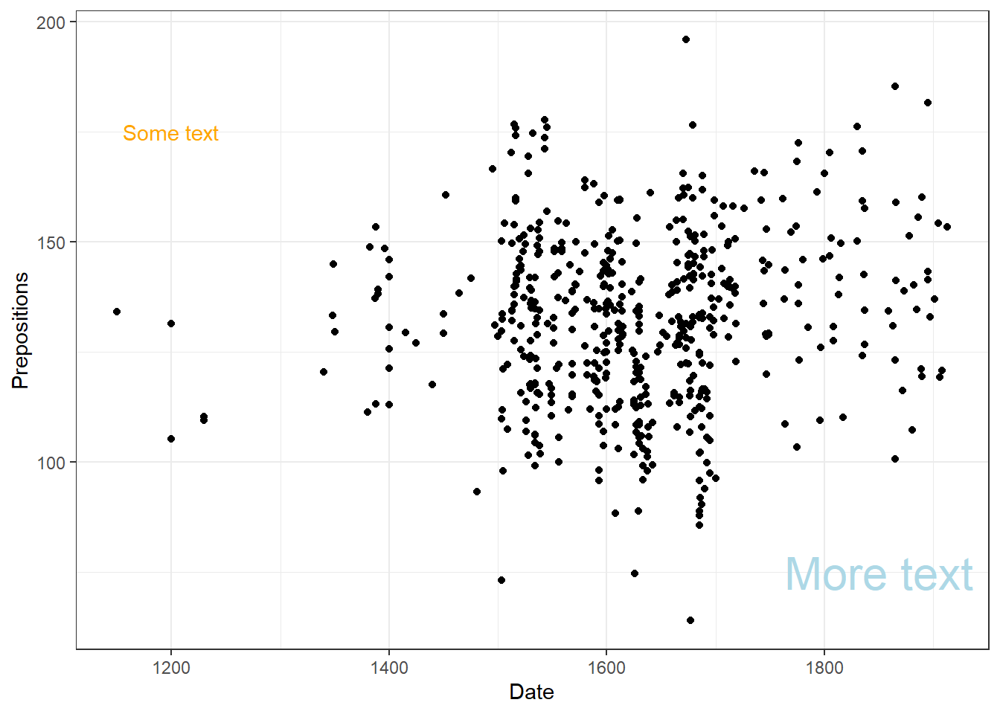
pdat %>%
dplyr::group_by(GenreRedux) %>%
dplyr::summarise(Frequency = round(mean(Prepositions), 1)) %>%
ggplot(aes(x = GenreRedux, y = Frequency, label = Frequency)) +
geom_bar(stat="identity") +
geom_text(vjust=-1.6, color = "black") +
coord_cartesian(ylim = c(0, 180)) +
theme_bw()pdat %>%
dplyr::group_by(Region, GenreRedux) %>%
dplyr::summarise(Frequency = round(mean(Prepositions), 1)) %>%
ggplot(aes(x = GenreRedux, y = Frequency, group = Region, fill = Region, label = Frequency)) +
geom_bar(stat="identity", position = "dodge") +
geom_text(vjust=1.6, position = position_dodge(0.9)) +
theme_bw()## `summarise()` has grouped output by 'Region'. You can override using the
## `.groups` argument.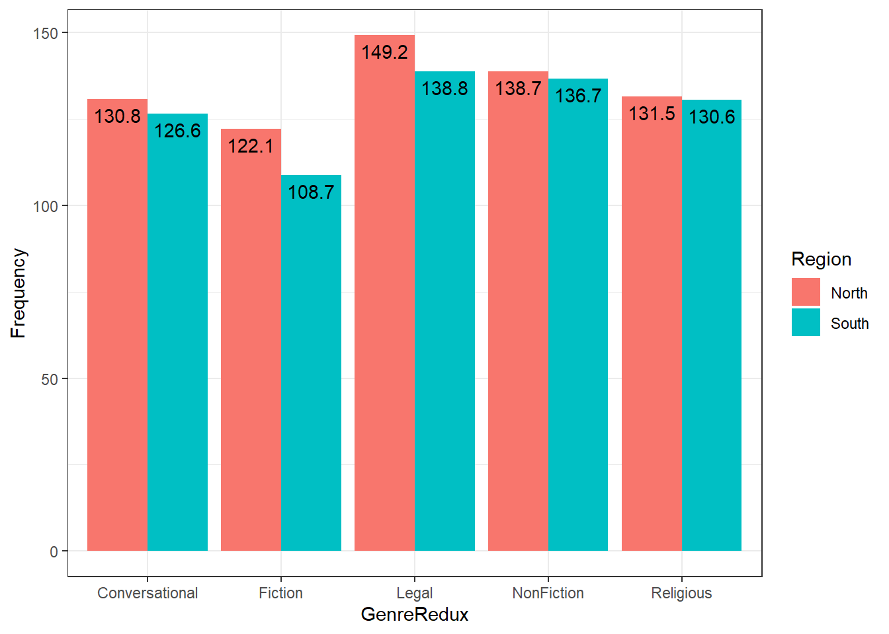
pdat %>%
dplyr::filter(Genre == "Fiction") %>%
ggplot(aes(x = Date, y = Prepositions, label = Prepositions)) +
geom_label(size = 3, vjust=1.2) +
geom_point() +
theme_bw()Combining multiple plots
ggplot(pdat, aes(x = Date, y = Prepositions)) +
facet_grid(~GenreRedux) +
geom_point() +
theme_bw()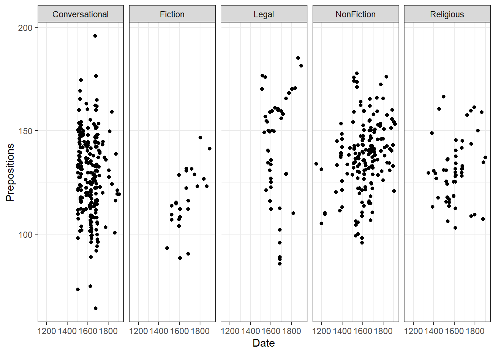
ggplot(pdat, aes(x = Date, y = Prepositions)) +
facet_wrap(vars(Region, GenreRedux), ncol = 5) +
geom_point() +
theme_bw()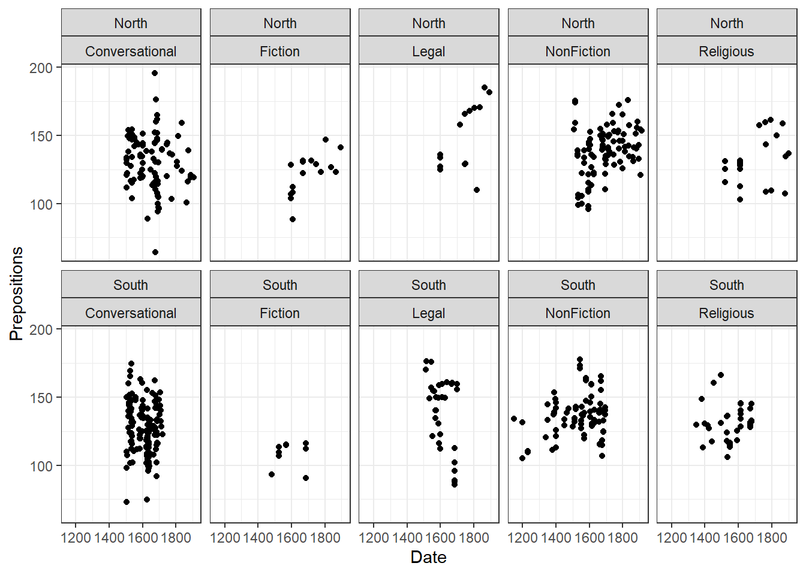
p1 <- ggplot(pdat, aes(x = Date, y = Prepositions)) + geom_point() + theme_bw()
p2 <- ggplot(pdat, aes(x = GenreRedux, y = Prepositions)) + geom_boxplot() + theme_bw()
p3 <- ggplot(pdat, aes(x = DateRedux, group = GenreRedux)) + geom_bar() + theme_bw()
p4 <- ggplot(pdat, aes(x = Date, y = Prepositions)) + geom_point() + geom_smooth(se = F) + theme_bw()
grid.arrange(p1, p2, nrow = 1)
grid.arrange(grobs = list(p4, p2, p3),
widths = c(2, 1),
layout_matrix = rbind(c(1, 1), c(2, 3)))Available themes
p <- ggplot(pdat, aes(x = Date, y = Prepositions)) + geom_point() + labs(x = "", y= "") +
ggtitle("Default") + theme(axis.text.x = element_text(size=6, angle=90))
p1 <- p + theme_bw() + ggtitle("theme_bw") + theme(axis.text.x = element_text(size=6, angle=90))
p2 <- p + theme_classic() + ggtitle("theme_classic") + theme(axis.text.x = element_text(size=6, angle=90))
p3 <- p + theme_minimal() + ggtitle("theme_minimal") + theme(axis.text.x = element_text(size=6, angle=90))
p4 <- p + theme_light() + ggtitle("theme_light") + theme(axis.text.x = element_text(size=6, angle=90))
p5 <- p + theme_dark() + ggtitle("theme_dark") + theme(axis.text.x = element_text(size=6, angle=90))
p6 <- p + theme_void() + ggtitle("theme_void") + theme(axis.text.x = element_text(size=6, angle=90))
p7 <- p + theme_gray() + ggtitle("theme_gray") + theme(axis.text.x = element_text(size=6, angle=90))
grid.arrange(p, p1, p2, p3, p4, p5, p6, p7, ncol = 4)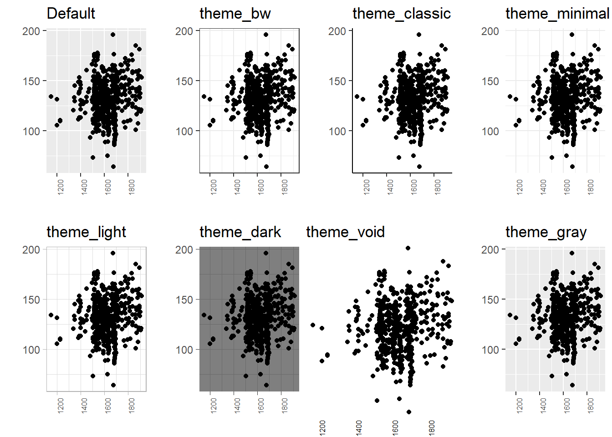
ggplot(pdat, aes(x = Date, y = Prepositions, color = GenreRedux)) +
geom_point() +
theme(panel.background = element_rect(fill = "white", colour = "red"))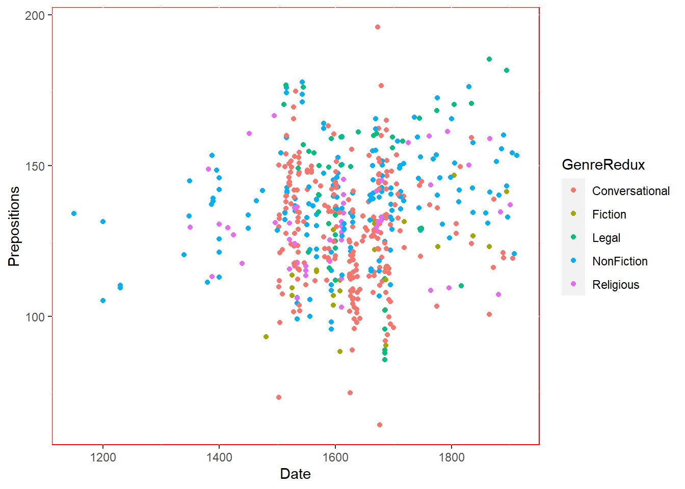
Extensive information about how to modify themes can be found here.
Modifying legends
ggplot(pdat, aes(x = Date, y = Prepositions, color = GenreRedux)) +
geom_point() +
theme(legend.position = "top")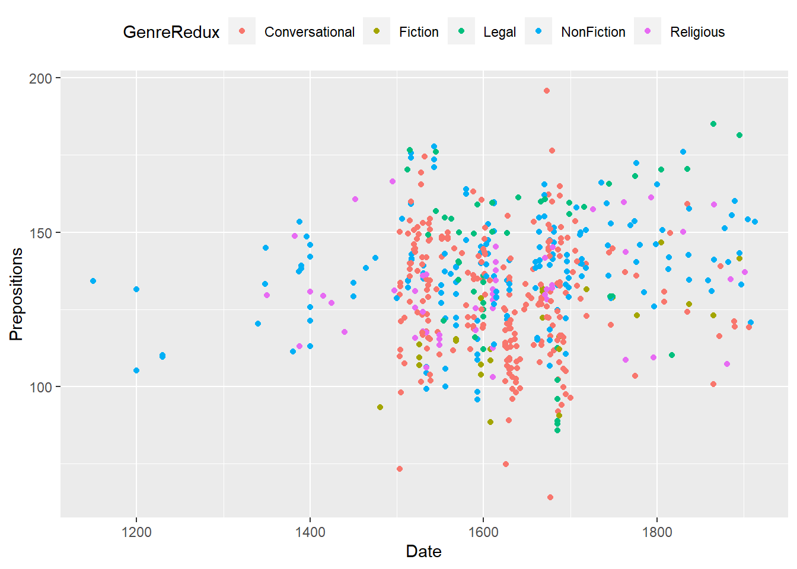
ggplot(pdat, aes(x = Date, y = Prepositions, color = GenreRedux)) +
geom_point() +
theme(legend.position = "none")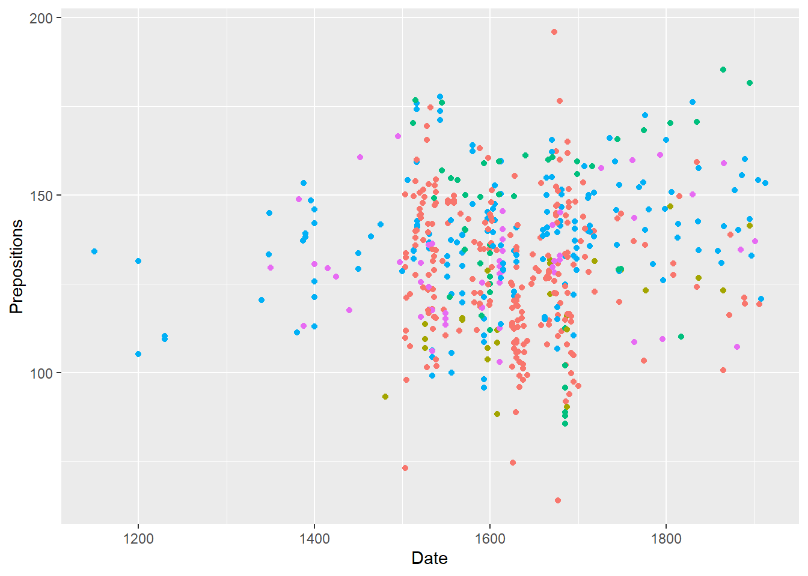
ggplot(pdat, aes(x = Date, y = Prepositions, linetype = GenreRedux, color = GenreRedux)) +
geom_smooth(se = F) +
theme(legend.position = c(0.2, 0.7)) ## `geom_smooth()` using method = 'loess' and formula = 'y ~ x'
ggplot(pdat, aes(x = Date, y = Prepositions, linetype = GenreRedux, color = GenreRedux)) +
geom_smooth(se = F) +
guides(color=guide_legend(override.aes=list(fill=NA))) +
theme(legend.position = "top",
legend.text = element_text(color = "green")) +
scale_linetype_manual(values=1:5,
name=c("Genre"),
breaks = names(table(pdat$GenreRedux)),
labels = names(table(pdat$GenreRedux))) +
scale_colour_manual(values=c("red", "gray30", "blue", "orange", "gray80"),
name=c("Genre"),
breaks=names(table(pdat$GenreRedux)),
labels = names(table(pdat$GenreRedux)))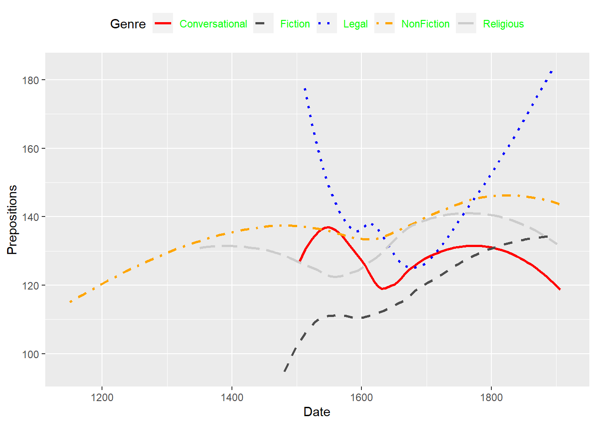
Citation & Session Info
Schweinberger, Martin. 2022. Introduction to Data Visualization in R. Brisbane: The University of Queensland. url: https://ladal.edu.au/introviz.html (Version 2022.11.17).
@manual{schweinberger2022introviz,
author = {Schweinberger, Martin},
title = {Introduction to Data Visualization in R},
note = {https://ladal.edu.au/introviz.html},
year = {2022},
organization = "The University of Queensland, School of Languages and Cultures},
address = {Brisbane},
edition = {2022.11.17}
}sessionInfo()## R version 4.2.2 (2022-10-31 ucrt)
## Platform: x86_64-w64-mingw32/x64 (64-bit)
## Running under: Windows 10 x64 (build 22621)
##
## Matrix products: default
##
## locale:
## [1] LC_COLLATE=English_Australia.utf8 LC_CTYPE=English_Australia.utf8
## [3] LC_MONETARY=English_Australia.utf8 LC_NUMERIC=C
## [5] LC_TIME=English_Australia.utf8
##
## attached base packages:
## [1] stats graphics grDevices utils datasets methods base
##
## other attached packages:
## [1] RColorBrewer_1.1-3 flextable_0.9.1 gridExtra_2.3 tidyr_1.3.0
## [5] stringr_1.5.0 dplyr_1.1.2 vip_0.3.2 ggplot2_3.4.2
##
## loaded via a namespace (and not attached):
## [1] sass_0.4.6 viridisLite_0.4.2 jsonlite_1.8.4
## [4] splines_4.2.2 bslib_0.4.2 assertthat_0.2.1
## [7] shiny_1.7.4 askpass_1.1 highr_0.10
## [10] fontLiberation_0.1.0 yaml_2.3.7 gdtools_0.3.3
## [13] pillar_1.9.0 lattice_0.21-8 glue_1.6.2
## [16] uuid_1.1-0 digest_0.6.31 promises_1.2.0.1
## [19] colorspace_2.1-0 htmltools_0.5.5 httpuv_1.6.11
## [22] Matrix_1.5-4.1 gfonts_0.2.0 fontBitstreamVera_0.1.1
## [25] pkgconfig_2.0.3 httpcode_0.3.0 purrr_1.0.1
## [28] xtable_1.8-4 scales_1.2.1 later_1.3.1
## [31] officer_0.6.2 fontquiver_0.2.1 tibble_3.2.1
## [34] openssl_2.0.6 mgcv_1.8-42 generics_0.1.3
## [37] farver_2.1.1 ellipsis_0.3.2 cachem_1.0.8
## [40] withr_2.5.0 klippy_0.0.0.9500 cli_3.6.1
## [43] magrittr_2.0.3 crayon_1.5.2 mime_0.12
## [46] evaluate_0.21 fansi_1.0.4 nlme_3.1-162
## [49] xml2_1.3.4 textshaping_0.3.6 tools_4.2.2
## [52] data.table_1.14.8 lifecycle_1.0.3 munsell_0.5.0
## [55] zip_2.3.0 compiler_4.2.2 jquerylib_0.1.4
## [58] systemfonts_1.0.4 rlang_1.1.1 grid_4.2.2
## [61] rstudioapi_0.14 labeling_0.4.2 rmarkdown_2.21
## [64] gtable_0.3.3 curl_5.0.0 R6_2.5.1
## [67] knitr_1.43 fastmap_1.1.1 utf8_1.2.3
## [70] ragg_1.2.5 stringi_1.7.12 crul_1.4.0
## [73] Rcpp_1.0.10 vctrs_0.6.2 tidyselect_1.2.0
## [76] xfun_0.39References
If you want to render the R Notebook on your machine, i.e. knitting the document to html or a pdf, you need to make sure that you have R and RStudio installed and you also need to download the bibliography file and store it in the same folder where you store the Rmd file.↩︎